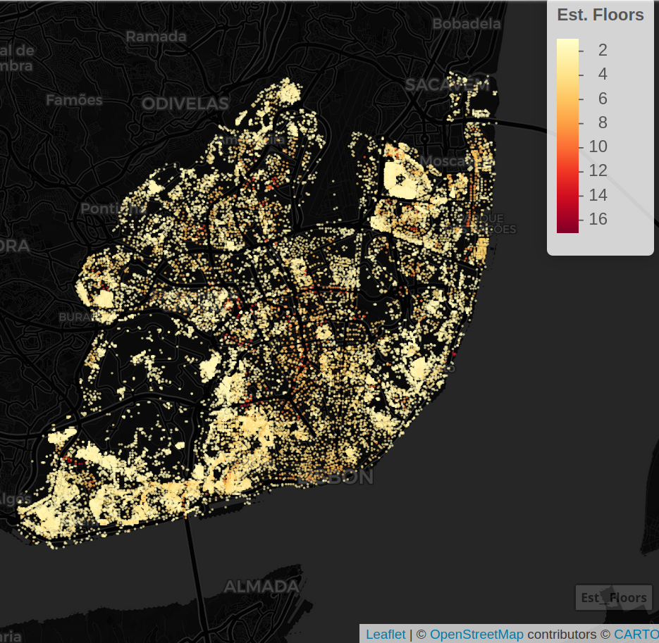
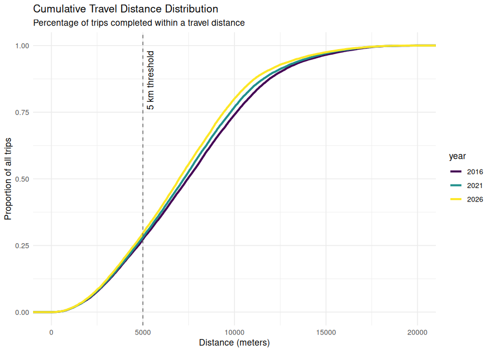
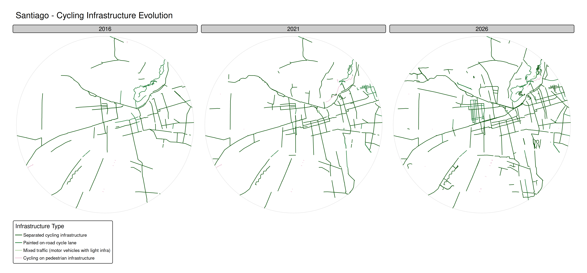
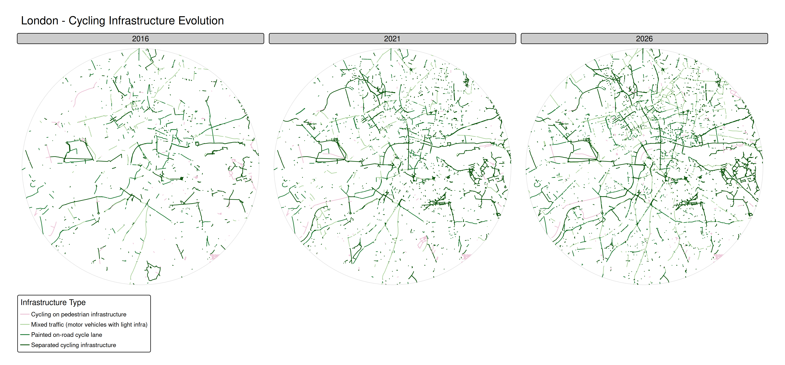
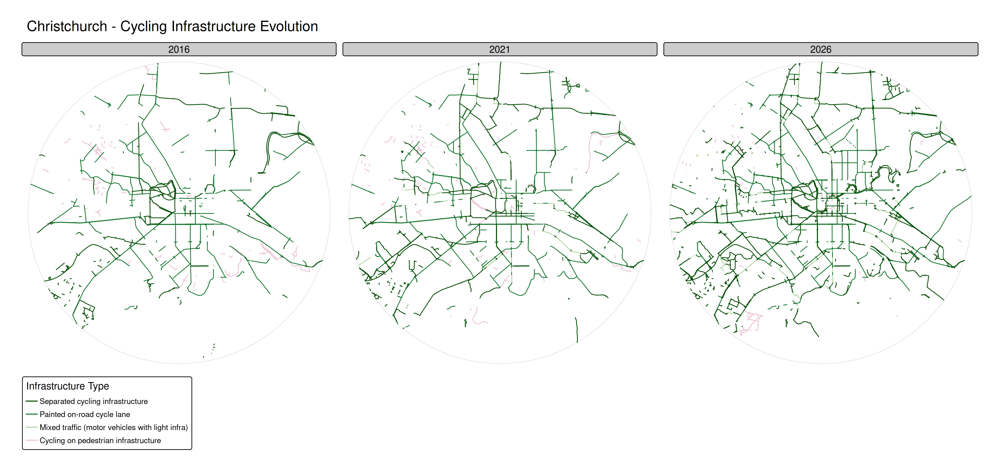
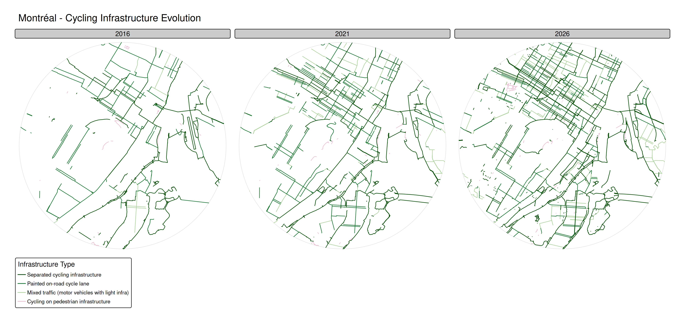

Quantifying the evolution of cycling network performance
A 50-city panel data analysis using open data
Rosa Félix
U-Shift lab, CERIS, Técnico

David Levinson
TransportLab

March 13, 2026 — TransportLab Seminar, University of Sydney
Funded by FCT Mobility (Portuguese Science Foundation)

A bit about me

Rosa Félix 🧑🔬
- 🎓 Researcher & Invited Assistant Professor
- 🚴♀️ Active mobility, Behaviour change, GIS
- 🏘️🇵🇹 U-Shift Lab, CERIS, Técnico – University of Lisbon
- 🌏🇦🇺 4-month visiting researcher at the University of Sydney
Historical OpenStreetMap (OSM)
- Source: Geofabrik 🗺️
- Full road network for routing
- Cycling infrastructure classification

Buildings as origins/destinations
- Avoiding census or travel survey data → global reproducibility.
- Used Global Building Atlas – LoD1 (Zhu et al. 2025).
- Buildings weighted by estimated volume as a proxy for trip attraction.



Selected Cities
- N = 50 cities with > 1 million residents, balanced across continents.
- Cities with cycling infrastructure expansion (2016–2026).

Coords sources: National Geospatial Intelligence Agency, USGS, US Census, NASA (simplemaps.com/data/world-cities).
Excluded Cities
8 cities excluded due to:
- Scale: < 100 km of CI by 2026
- Growth: < 10% CI expansion in 2016–2026
- Quality: OSM tagging variability


Cycling Infrastructure Evolution
Evolution of absolute cycling infrastructure across the 50 cities (2016–2026)

Methods Overview

Efficient and reproducible pipeline:
- Each city takes ~20 minutes to run the full pipeline
- Generates ~3 GB of data per city
Tools

R
sf, h3jsr, osmactive, r5r, stplanr, fixest

DuckDB
Global Building Atlas data connection

Java / R5
Conveyal routing engine

Gemini 3.1 Pro Scaling R scripts into an efficient 50-city pipeline
OD Pairs Sampling
10km buffer from city center coordinates
20,000 OD pairs generated per city
Destinations randomly sampled, weighted by building volume (proxy for trip attraction)
Distance follows a log-normal function calibrated for cycling trips (Kou and Cai 2019)
Origin hexagons (with buildings) sampled using H3 resolution 9 (~200m edge length, ~400m “diameter”, ~0.105 km²)


Trip distance distribution
- Log-normal calibration ensures routes resemble realistic urban cycling trips.


→
About 75% of trips are below 5 km. This already accounts for ~40% circuity.
CI Type examples
- Protected CI

Source: Definitions for cycling infrastructure (United Nations Economic Commission for Europe 2026)
CI Type examples
- Painted CI

Source: Definitions for cycling infrastructure (United Nations Economic Commission for Europe 2026)
CI Type examples
- Mixed / Shared with motor traffic CI

Source: Daniel Capilla, Wikimedia
{kind=link}
CI Type examples
- Shared with pedestrians CI

Source: Definitions for cycling infrastructure (United Nations Economic Commission for Europe 2026)
CI evolution by type


CI evolution – Santiago


CI evolution – London


CI evolution – Brussels


CI evolution – Christchurch


CI evolution – Montréal


CI evolution – São Paulo


Level of Traffic Stress (LTS)
- Classification from Mineta Transport Institute (2012)

LTS - Alta Planning
- Adapted by Conveyal (Conway 2015) to applied to every OSM edge as:
LTS classification - examples

LTS classification - examples

LTS classification - examples

LTS classification - examples

LTS problem for bicycle routing
But…


Source: Author
LTS problem for bicycle routing
Or…


Source: A Mensagem / EMEL
LTS problem for bicycle routing
Or even…

Source: Author / nickfalbo/flickr
LTS problem for bicycle routing

LTS problem for bicycle routing


Even with a CI at Main St, the routing algorithm “preffers” the lower LTS route, as long as it is not 3x longer.
In real life this is usually not the cyclist preference (more direct and still safe).
LTS problem for bicycle routing


Despite being the same length, a residential road with or without CI is treated the same by the routing algorith.
OSM drawing and tagging
Note: Protected CI is drawn as a separate segment in OSM; painted lanes and sharrows are tags on the road segment. Both approaches are modelled correctly here.


Overline Maps (Used Routes)
Using the stplanr::overline() we can visualize the segments with high frequency of use by the 20,000 routes.

Overline Maps (Used Routes)

Overline Maps (Used Routes)

Overline Maps (Used Routes)

The Alternative LTS
Comparing the baseline LTS routing versus an alternative LTS assignment that more aggressively recognises CI:


The alternative LTS shows that, when CI is credited more generously, a higher proportion of trips spend time on LTS 1 segments — validating the robustness of the methodology.
Thank You
Funded by FCT - Fundação para a Ciência e Tecnologia under the FCT-Mobility program
(FCT/Mobility/1302410540/2024-25)